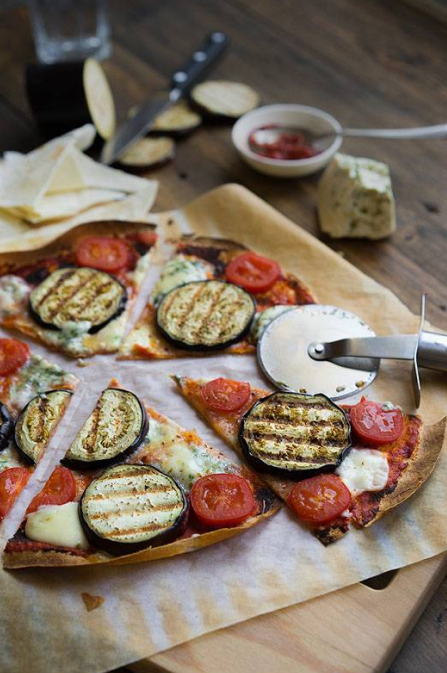

🍕 Быстрая пицца с баклажанами и голубым сырини
📋 Ингредиенты
- Тортилья (или тонкий лаваш) — 1 шт.
- Баклажан — 1 шт.
- Помидор — 1 шт.
- Сыр твёрдый (моцарелла, чеддер, грюйер) — 30 г
- Голубой сыр (дор блю, горгонзола) — 30 г
- Томатный соус (кетчуп, песто, остатки рагу) — 3 ст. л.
- Оливковое масло — для смазывания
- Перец, грибы, другие топпинги — по желанию
👩🍳 Приготовление
- Подготовьте основу. Из тортильи вырежьте круг (обведите тарелку и обрежьте ножом для пиццы). Если есть только обрезки лаваша — сделайте несколько маленьких пицц.
- Разогрейте духовку до 250 °C.
- Обжарьте баклажан. Нарежьте его толстыми дольками (6–7 мм). Обжарьте на сковороде гриль по 3 минуты с каждой стороны. Чтобы получить красивые полоски, прижимайте баклажаны плоской лопаткой или дном тарелки.
- Смажьте основу. На лепёшку нанесите томатный соус (подойдёт любой: томатная паста, кетчуп, песто, овощная икра).
- Добавьте сыры. Сверху натрите твёрдый сыр (моцарелла, чеддер, грюйер — чем твёрже, тем лучше). Разложите несколько долек помидора. По желанию — ломтики перца, грибов.
- Выложите начинку. Сверху разместите кольца баклажана и кусочки голубого сыра. Голубой сыр в пицце прекрасен — на фоне нейтральных баклажанов он даёт изысканный аромат.
- Запекайте. Поставьте пиццу в духовку на 3–5 минут. Готовность — когда сыр хорошо расплавился, а края лепёшки начали золотиться (не дайте ей подгореть).
- Подача. Быстро нарежьте на кусочки и подавайте. Идеально с бокалом вина, пивом или просто хорошей компанией. Вот и секрет лучшей пиццы! 🍷
Утилизируйте остатки — и пицца готова за 15 минут! Buon appetito! 🍕
